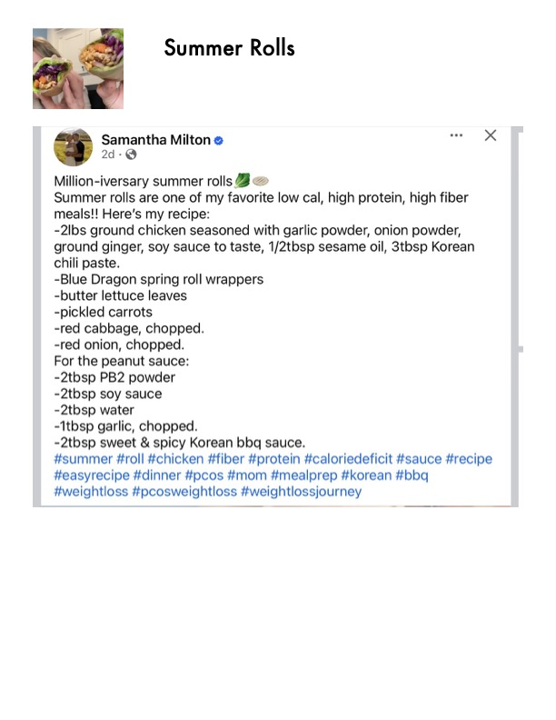

Summer Rolls

Original cookbook page 786
Ingredients
- 2 lbs ground chicken
- Garlic powder to taste
- Onion powder to taste
- Ground ginger to taste
- Soy sauce to taste
- 1/2 tbsp sesame oil
- 3 tbsp Korean chili paste
- Blue Dragon spring roll wrappers
- Butter lettuce leaves
- Pickled carrots
- Red cabbage, chopped
- Red onion, chopped
- 2 tbsp PB2 powder
- 2 tbsp soy sauce
- 2 tbsp water
- 1 tbsp garlic, chopped
- 2 tbsp sweet and spicy Korean BBQ sauce
Instructions
- Million-iversary summer rolls B@
- Summer rolls are one of my favorite low cal, high protein, high fiber
- -2lbs ground chicken seasoned with garlic powder, onion powder,
- -Blue Dragon spring roll wrappers
- #summer #roll #chicken #fiber #protein #caloriedeficit #sauce #recipe
Recipe #786 from collection